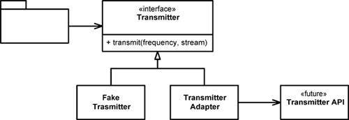
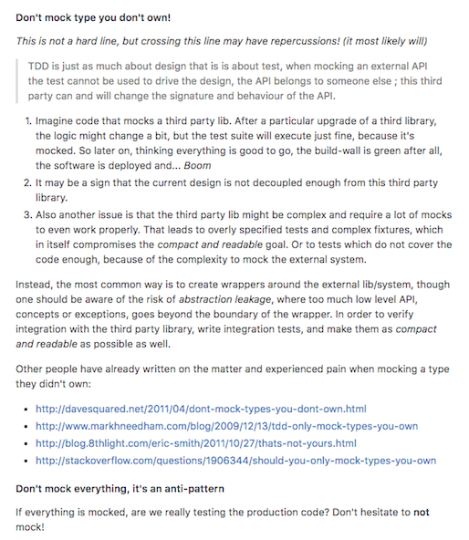
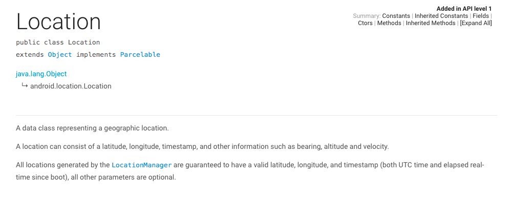

<!doctype html>
<html>
<head>
    <meta charset="utf-8">
    <meta http-equiv="X-UA-Compatible" content="IE=edge,chrome=1">
    <title>Coding Stones. Let's rock your product!</title>
    <meta name="description"
          content="Somos una banda de diseñadores y desarrolladores de software. Diseñamos, construimos y hacemos evolucionar productos para mobile y para la web">
    <meta name="viewport" content="width=device-width, initial-scale=1.0, maximum-scale=1.0, user-scalable=no">

    <meta property="og:url" content="http://www.codingstones.com"/>
    <meta property="og:title" content="Coding Stones"/>
    <meta property="og:description"
          content="Somos una banda de diseñadores y desarrolladores de software. Diseñamos, construimos y hacemos evolucionar productos para mobile y para la web"/>
    <meta property="og:locale" content="es_ES"/>
    <meta property="og:image" content="http://www.codingstones.com/img/og_image_v103.png"/>
    <meta property="og:image:type" content="image/png"/>
    <meta property="og:image:width" content="1077"/>
    <meta property="og:image:height" content="630"/>

    <title>Haize</title>

    <link rel="stylesheet" href="css/reveal.css">
    <link rel="stylesheet" href="css/theme/codingstones.css">

    <!-- Theme used for syntax highlighting of code -->
    <link rel="stylesheet" href="lib/css/zenburn.css">

    <link rel="apple-touch-icon-precomposed" href="apple-touch-icon-precomposed.png">
    <link rel="icon" href="favicon.png">

    <!-- Printing and PDF exports -->
    <script>
      var link = document.createElement('link');
      link.rel = 'stylesheet';
      link.type = 'text/css';
      link.href = window.location.search.match(/print-pdf/gi) ? 'css/print/pdf.css' : 'css/print/paper.css';
      document.getElementsByTagName('head')[0].appendChild(link);
    </script>
</head>
<body>
<div class="logo">
    <a href="#up" class="up"></a>
</div>
<div class="reveal">
    <div class="slides">
        <section data-markdown>
            <script type="text/template">
                # Haize

                ## Creando una arquitectura Android que se adapte al cambio
                <br />
                **Zaragoza Enero 2017**
                <br />
                <br />
                @gualison & @jrubr
            </script>
        </section>

        <section data-markdown>
            <script type="text/template">
                ### Sobre nosotros
                
            </script>
        </section>

        <section data-markdown>
            <script type="text/template">
                ## ¿Qué hacemos?

                * Desarrollo Web
                * Aplicaciones Móviles
                * UX y diseño
                * Infraestructura y automatización
                * Mentoring
                * Formación
            </script>
        </section>

        <section data-markdown>
            <script type="text/template">
                ## ¿Cómo lo hacemos?

                * Equipo pequeño y multidisciplinar, a là *XP*
                * Código flexible, mantenible y transmitible
                * Una experiencia de usuario fuera de serie
            </script>
        </section>

        <!--<section data-markdown>-->
            <!--<script type="text/template">-->
                <!--## Proyecto Haize-->

                <!--* App Android para dispositivo BLE-->
                <!--* Kickstarter-->
                <!--* 2 Desarroladores-->
                <!--* Disponibilidad < 2 meses de desarrollo-->
                <!--* Necesaria transmisión simple-->
            <!--</script>-->
        <!--</section>-->

        <section data-markdown>
            <script type="text/template">
                ## Features Haize

                * Geocoding (buscar mi destino)
                * Observar localización (cada n segundos y en segundo plano)
                * Pintar posición y ruta en mapa
                * Mandar datos al dispositivo (Conexión BLE)
            </script>
        </section>

        <section>
            <video data-autoplay class="stretch" src="https://ksr-video.imgix.net/projects/2117882/video-600613-h264_high.mp4"></video>
        </section>

        <section data-markdown>
            <script type="text/template">
                ###Riesgos, incertidumbre, poco tiempo
                
            </script>

            <aside class="notes" data-markdown>
                No somos los mayores expertos android
                No tenemos ni idea de las licencias y cobertura
                La cosa puede cambiar
                Tiene que funcionar en segundo plano
                Muchas librerias pero poco maduras
                ...
            </aside>
        </section>

        <section data-markdown>
            <script type="text/template">
                ## ¿Cómo trabajamos con tantos riesgos y tan poco tiempo?
            </script>
        </section>

        <section data-markdown>
            <script type="text/template">
                ## Gestión de riesgos

                * Clean Architecture
                * Tests
                * IDD
                * No reinventar la rueda (Fcejas, Mancuso, Uncle bob...)
                * Limitar alcance por valor
                * Elegir librerías adecuadas
            </script>
        </section>

        <section data-markdown>
            <script type="text/template">
                ## ¿Por qué TDD?
            </script>
        </section>

        <section data-markdown>
            <script type="text/template">
                ## Pero en Android es complicado
            </script>
        </section>

        <section data-markdown>
            <script type="text/template">
                ##  Wrap with **Adapters**

                

                <aside class="notes" data-markdown>
                    Capítulo 8 Clean Code
                </aside>

            </script>
        </section>

        <section data-markdown>
            <script type="text/template">
                ####  Don't mock what you don't own
                
            </script>
        </section>


        <section data-markdown>
            <script type="text/template">
                ####  The Core of our domain
                
            </script>
        </section>


        <!--<section data-markdown>-->
            <!--<script type="text/template">-->
                <!--## Notas extra Haize-->
                <!--Cosas a mejorar:-->
                <!-- -El tratamiento de errores deberia usar ErrorMessageFactory para testear con unitarios los mensajes a mostrar-->
                <!-- - Más TDD y menos post Test-->
                <!-- - Quitar debug test-->
                <!-- - Hablar de showDebugLocation info-->
                <!-- - Mejorar la parte android-->
                <!-- - Tests Espresso-->
                <!-- - Tests Groovy-->
                <!-- - DestinationSearchPresenter mola poque usa varias acciones -> enlazar con foto de mancuso/robert martin-->

            <!--</script>-->
        <!--</section>-->

        <!--<section data-markdown>-->
            <!--<script type="text/template">-->
                <!--## Delivery Mechanism-->
            <!--</script>-->
        <!--</section>-->

        <!--<section data-markdown>-->
            <!--<script type="text/template">-->
                <!--## Una arquitectura *es un altavoz* para la *intención* de la aplicación-->
            <!--</script>-->
        <!--</section>-->

        <!--<section data-markdown>-->
            <!--<script type="text/template">-->
                <!--## El framework que se utiliza es un *puto* detalle-->
            <!--</script>-->
        <!--</section>-->

        <!--<section data-markdown>-->
            <!--<script type="text/template">-->
                <!--Los UseCase van dentro del dominio-->
                <!---->
            <!--</script>-->
        <!--</section>-->

        <section data-markdown>
            <script type="text/template">
                
            </script>
        </section>

        <section data-markdown>
            <script type="text/template">
                ####  A real example

                

            </script>
        </section>

        <section data-markdown>
            <script type="text/template">
                ## Una buena arquitectura:

                * Permite *diferir* las decisiones potencialmente dolorosas
                * Maximiza el número de *decisiones no tomadas*
                * Permite cambiar piezas y dar opciones a nuestro cliente
            </script>
        </section>

        <section data-markdown>
            <script type="text/template">
                ## Decisiones de nuestra "arquitectura"

                * DDD
                * Clean Architecture / Hexagonal Architecture
                * Módulo Java Puro para el dominio
                * MVP en capa de presentación
            </script>
        </section>

        <section data-markdown>
            <script type="text/template">
                ## Librerías que nos dan el *power*

                * AutoValue
                * RxJava
                * Retrolambda
                * AndroidRxBle
            </script>
        </section>

        <section data-markdown data-background-image="images/grumpy_cat.jpg">
        </section>


        <section data-markdown>
            <script type="text/template">
                ## No me quiero casar con el framework
                ####El mecanismo de los frameworks para que los extienda es la *inversión de control*
                ### Mediante callbacks o listeners android me permite que lo extienda
                ### Hollywood principle:
                ####Android y sus librerías deciden llamarme a mi código cuando ellos quieren
                ### Nosotros también podemos hacer lo mismo con nuestro dominio
            </script>
        </section>

        <section data-markdown>
            <script type="text/template">
                # Ports and Adapters
                ## Mi dominio define puertos(interfaces) para ser extendido
                ## Fuera de mi dominio tengo *adapters* que me permiten ser extendido mediante las librerías android
                ## Mediante callbacks o listeners android me permite que lo llame
                ## Nosotros también podemos hacer lo mismo con nuestro dominio
            </script>
        </section>

        <section data-markdown>
            <script type="text/template">
                # Ejemplos en Haize
                ## En mi dominio tengo un servicio para Geocoding (*puerto*)
                ## Cada libreria devuelve un tipo de dirección
                ## Fuera de mi dominio tengo un *adapter* para cada una de ellas
                ## En la construcción de mis acciones elijo la implementación
                ## De esta forma puedo sustituir piezas fácilmente
            </script>
        </section>


        <section data-markdown>
            <script type="text/template">
                ## ¿De qué va este proyecto?
            </script>
        </section>

        <section data-markdown>
            <script type="text/template">
                
            </script>
        </section>

        <section data-markdown>
            <script type="text/template">
                ## Conclusiones

                * Las actions *no* sustituyen a un servicio de dominio
                * Es un buen punto de entrada para descubrir el API
            </script>
        </section>

        <section data-markdown>
            <script type="text/template">
                ## Navegación por la estructura del proyecto
            </script>
        </section>

        <section data-markdown data-background-image="images/preguntas.jpg">
        </section>

        <section data-markdown data-background-image="images/yo_k_se_tio.gif">
        </section>
    </div>
</div>

<script src="lib/js/head.min.js"></script>
<script src="js/reveal.js"></script>

<script>
  // More info https://github.com/hakimel/reveal.js#configuration
  Reveal.initialize({
    controls: false,
    history: true,

    // More info https://github.com/hakimel/reveal.js#dependencies
    dependencies: [
      {src: 'plugin/markdown/marked.js'},
      {src: 'plugin/markdown/markdown.js'},
      {src: 'plugin/notes/notes.js', async: true},
      {
        src: 'plugin/highlight/highlight.js', async: true, callback: function () {
        hljs.initHighlightingOnLoad();
      }
      }
    ]
  });
</script>
</body>
</html>
